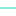

<!doctype html>
<html lang="en">
    <head>
        <meta charset="utf-8">
        <meta http-equiv="X-UA-Compatible" content="IE=edge">
        <meta name="viewport" content="initial-scale=1,user-scalable=no,maximum-scale=1,width=device-width">
        <meta name="mobile-web-app-capable" content="yes">
        <meta name="apple-mobile-web-app-capable" content="yes">
        <link rel="stylesheet" href="css/leaflet.css">
        <link rel="stylesheet" href="css/qgis2web.css"><link rel="stylesheet" href="css/fontawesome-all.min.css">
        <link rel="stylesheet" href="css/leaflet-measure.css">
        <style>
        html, body, #map {
            width: 100%;
            height: 100%;
            padding: 0;
            margin: 0;
        }
        </style>
        <title></title>
    </head>
    <body>
        <div id="map">
        </div>
        <script src="js/qgis2web_expressions.js"></script>
        <script src="js/leaflet.js"></script>
        <script src="js/leaflet.rotatedMarker.js"></script>
        <script src="js/leaflet.pattern.js"></script>
        <script src="js/leaflet-hash.js"></script>
        <script src="js/Autolinker.min.js"></script>
        <script src="js/rbush.min.js"></script>
        <script src="js/labelgun.min.js"></script>
        <script src="js/labels.js"></script>
        <script src="js/leaflet-measure.js"></script>
        <script src="data/shpmorotai_1.js"></script>
        <script src="data/pulaurizalxixi_3.js"></script>
        <script>
        var highlightLayer;
        function highlightFeature(e) {
            highlightLayer = e.target;

            if (e.target.feature.geometry.type === 'LineString') {
              highlightLayer.setStyle({
                color: '#ffff00',
              });
            } else {
              highlightLayer.setStyle({
                fillColor: '#ffff00',
                fillOpacity: 1
              });
            }
            highlightLayer.openPopup();
        }
        var map = L.map('map', {
            zoomControl:true, maxZoom:28, minZoom:1
        }).fitBounds([[0.5931007327537747,127.3001520025884],[3.4133696124512323,129.98822077855004]]);
        var hash = new L.Hash(map);
        map.attributionControl.setPrefix('<a href="https://github.com/tomchadwin/qgis2web" target="_blank">qgis2web</a> &middot; <a href="https://leafletjs.com" title="A JS library for interactive maps">Leaflet</a> &middot; <a href="https://qgis.org">QGIS</a>');
        var autolinker = new Autolinker({truncate: {length: 30, location: 'smart'}});
        var measureControl = new L.Control.Measure({
            position: 'topleft',
            primaryLengthUnit: 'meters',
            secondaryLengthUnit: 'kilometers',
            primaryAreaUnit: 'sqmeters',
            secondaryAreaUnit: 'hectares'
        });
        measureControl.addTo(map);
        document.getElementsByClassName('leaflet-control-measure-toggle')[0]
        .innerHTML = '';
        document.getElementsByClassName('leaflet-control-measure-toggle')[0]
        .className += ' fas fa-ruler';
        var bounds_group = new L.featureGroup([]);
        function setBounds() {
        }
        map.createPane('pane_GoogleSatellite_0');
        map.getPane('pane_GoogleSatellite_0').style.zIndex = 400;
        var layer_GoogleSatellite_0 = L.tileLayer('https://mt0.google.com/vt/lyrs=s&x={x}&y={y}&z={z}', {
            pane: 'pane_GoogleSatellite_0',
            opacity: 1.0,
            attribution: '',
            minZoom: 1,
            maxZoom: 28,
            minNativeZoom: 0,
            maxNativeZoom: 20
        });
        layer_GoogleSatellite_0;
        map.addLayer(layer_GoogleSatellite_0);
        function pop_shpmorotai_1(feature, layer) {
            layer.on({
                mouseout: function(e) {
                    for (i in e.target._eventParents) {
                        e.target._eventParents[i].resetStyle(e.target);
                    }
                    if (typeof layer.closePopup == 'function') {
                        layer.closePopup();
                    } else {
                        layer.eachLayer(function(feature){
                            feature.closePopup()
                        });
                    }
                },
                mouseover: highlightFeature,
            });
            var popupContent = '<table>\
                    <tr>\
                        <td colspan="2">' + (feature.properties['KAB_KOTA'] !== null ? autolinker.link(feature.properties['KAB_KOTA'].toLocaleString()) : '') + '</td>\
                    </tr>\
                </table>';
            layer.bindPopup(popupContent, {maxHeight: 400});
        }

        function style_shpmorotai_1_0() {
            return {
                pane: 'pane_shpmorotai_1',
                opacity: 1,
                color: 'rgba(35,35,35,1.0)',
                dashArray: '',
                lineCap: 'butt',
                lineJoin: 'miter',
                weight: 1.0, 
                fill: true,
                fillOpacity: 1,
                fillColor: 'rgba(166,206,227,1.0)',
                interactive: true,
            }
        }
        map.createPane('pane_shpmorotai_1');
        map.getPane('pane_shpmorotai_1').style.zIndex = 401;
        map.getPane('pane_shpmorotai_1').style['mix-blend-mode'] = 'normal';
        var layer_shpmorotai_1 = new L.geoJson(json_shpmorotai_1, {
            attribution: '',
            interactive: true,
            dataVar: 'json_shpmorotai_1',
            layerName: 'layer_shpmorotai_1',
            pane: 'pane_shpmorotai_1',
            onEachFeature: pop_shpmorotai_1,
            style: style_shpmorotai_1_0,
        });
        bounds_group.addLayer(layer_shpmorotai_1);
        map.addLayer(layer_shpmorotai_1);
        map.createPane('pane_pulaukuslope_2');
        map.getPane('pane_pulaukuslope_2').style.zIndex = 402;
        var img_pulaukuslope_2 = 'data/pulaukuslope_2.png';
        var img_bounds_pulaukuslope_2 = [[1.963074119187317,128.12489197082846],[2.6451686951407707,128.69338949904227]];
        var layer_pulaukuslope_2 = new L.imageOverlay(img_pulaukuslope_2,
                                              img_bounds_pulaukuslope_2,
                                              {pane: 'pane_pulaukuslope_2'});
        bounds_group.addLayer(layer_pulaukuslope_2);
        map.addLayer(layer_pulaukuslope_2);
        function pop_pulaurizalxixi_3(feature, layer) {
            layer.on({
                mouseout: function(e) {
                    for (i in e.target._eventParents) {
                        e.target._eventParents[i].resetStyle(e.target);
                    }
                    if (typeof layer.closePopup == 'function') {
                        layer.closePopup();
                    } else {
                        layer.eachLayer(function(feature){
                            feature.closePopup()
                        });
                    }
                },
                mouseover: highlightFeature,
            });
            var popupContent = '<table>\
                    <tr>\
                        <td colspan="2">' + (feature.properties['ID'] !== null ? autolinker.link(feature.properties['ID'].toLocaleString()) : '') + '</td>\
                    </tr>\
                    <tr>\
                        <td colspan="2">' + (feature.properties['Z'] !== null ? autolinker.link(feature.properties['Z'].toLocaleString()) : '') + '</td>\
                    </tr>\
                </table>';
            layer.bindPopup(popupContent, {maxHeight: 400});
        }

        function style_pulaurizalxixi_3_0(feature) {
            switch(String(feature.properties['Z'])) {
                case '0.0':
                    return {
                pane: 'pane_pulaurizalxixi_3',
                opacity: 1,
                color: 'rgba(68,96,232,1.0)',
                dashArray: '',
                lineCap: 'square',
                lineJoin: 'bevel',
                weight: 2.0,
                fillOpacity: 0,
                interactive: true,
            }
                    break;
                case '250.0':
                    return {
                pane: 'pane_pulaurizalxixi_3',
                opacity: 1,
                color: 'rgba(191,116,206,1.0)',
                dashArray: '',
                lineCap: 'square',
                lineJoin: 'bevel',
                weight: 1.0,
                fillOpacity: 0,
                interactive: true,
            }
                    break;
                case '500.0':
                    return {
                pane: 'pane_pulaurizalxixi_3',
                opacity: 1,
                color: 'rgba(117,236,91,1.0)',
                dashArray: '',
                lineCap: 'square',
                lineJoin: 'bevel',
                weight: 1.0,
                fillOpacity: 0,
                interactive: true,
            }
                    break;
                case '750.0':
                    return {
                pane: 'pane_pulaurizalxixi_3',
                opacity: 1,
                color: 'rgba(231,60,91,1.0)',
                dashArray: '',
                lineCap: 'square',
                lineJoin: 'bevel',
                weight: 1.0,
                fillOpacity: 0,
                interactive: true,
            }
                    break;
                case '1000.0':
                    return {
                pane: 'pane_pulaurizalxixi_3',
                opacity: 1,
                color: 'rgba(207,179,52,1.0)',
                dashArray: '',
                lineCap: 'square',
                lineJoin: 'bevel',
                weight: 1.0,
                fillOpacity: 0,
                interactive: true,
            }
                    break;
                default:
                    return {
                pane: 'pane_pulaurizalxixi_3',
                opacity: 1,
                color: 'rgba(15,217,180,1.0)',
                dashArray: '',
                lineCap: 'square',
                lineJoin: 'bevel',
                weight: 1.0,
                fillOpacity: 0,
                interactive: true,
            }
                    break;
            }
        }
        map.createPane('pane_pulaurizalxixi_3');
        map.getPane('pane_pulaurizalxixi_3').style.zIndex = 403;
        map.getPane('pane_pulaurizalxixi_3').style['mix-blend-mode'] = 'normal';
        var layer_pulaurizalxixi_3 = new L.geoJson(json_pulaurizalxixi_3, {
            attribution: '',
            interactive: true,
            dataVar: 'json_pulaurizalxixi_3',
            layerName: 'layer_pulaurizalxixi_3',
            pane: 'pane_pulaurizalxixi_3',
            onEachFeature: pop_pulaurizalxixi_3,
            style: style_pulaurizalxixi_3_0,
        });
        bounds_group.addLayer(layer_pulaurizalxixi_3);
        map.addLayer(layer_pulaurizalxixi_3);
        var baseMaps = {};
        L.control.layers(baseMaps,{'pulau rizal xixi<br /><table><tr><td style="text-align: center;"></td><td>0</td></tr><tr><td style="text-align: center;"></td><td>250.0000000000</td></tr><tr><td style="text-align: center;"></td><td>500.0000000000</td></tr><tr><td style="text-align: center;"></td><td>750.0000000000</td></tr><tr><td style="text-align: center;"></td><td>1000.0000000000</td></tr><tr><td style="text-align: center;"></td><td></td></tr></table>': layer_pulaurizalxixi_3,"pulauku slope": layer_pulaukuslope_2,' shp morotai': layer_shpmorotai_1,"Google Satellite": layer_GoogleSatellite_0,}).addTo(map);
        setBounds();
        var i = 0;
        layer_pulaurizalxixi_3.eachLayer(function(layer) {
            var context = {
                feature: layer.feature,
                variables: {}
            };
            layer.bindTooltip((layer.feature.properties['Z'] !== null?String('<div style="color: #ffffff; font-size: 10pt; font-family: \'Arial\', sans-serif;">' + layer.feature.properties['Z']) + '</div>':''), {permanent: true, offset: [-0, -16], className: 'css_pulaurizalxixi_3'});
            labels.push(layer);
            totalMarkers += 1;
              layer.added = true;
              addLabel(layer, i);
              i++;
        });
        L.ImageOverlay.include({
            getBounds: function () {
                return this._bounds;
            }
        });
        resetLabels([layer_pulaurizalxixi_3]);
        map.on("zoomend", function(){
            resetLabels([layer_pulaurizalxixi_3]);
        });
        map.on("layeradd", function(){
            resetLabels([layer_pulaurizalxixi_3]);
        });
        map.on("layerremove", function(){
            resetLabels([layer_pulaurizalxixi_3]);
        });
        </script>
    </body>
</html>
